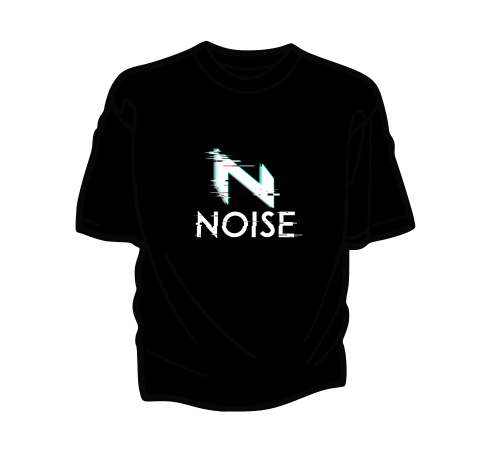

NOISE
Your Nineties Band
A Noise é o rock que você esqueceu que amava.
Com raízes no grunge, o quarteto explora todo o panorama sonoro dos anos 90, passando por rock alternativo, pop rock, reggae rock e funk rock para montar um setlist recheado de recordações.
No show da Noise, você nunca sabe se a próxima música vai te lembrar de um primeiro amor, uma primeira viagem ou só uma tarde de Disk MTV.
LOJA
Camisa Noise | Preta
A BANDA
O vocalista da Noise é aquilo que se espera de um cantor nos anos 90: potente, rasgado e cheio de energia.
Cada verso é interpretado com uma emoção genuína que só esse megafone barbudo é capaz de trazer.
X e Y são suas principais influências.
Para o guitarrista da Noise, a magia acontece com o timbre perfeito.
Seja no ajuste de um reverb, delay ou distorção pesada, todo acorde, arpejo ou linha melódica busca resgatar uma década inteira.
Alice in Chains, Radiohead e Smashing Pumpkins estão entre as grandes referências.
Se o baixo é a estrutura da harmonia, então a baixista da Noise é a fundação sólida que toda banda sonha em ter.
Calma e precisa, ela transita entre groove, pancada e distorção conforme a música pede.
Suas maiores influências são X e Y.